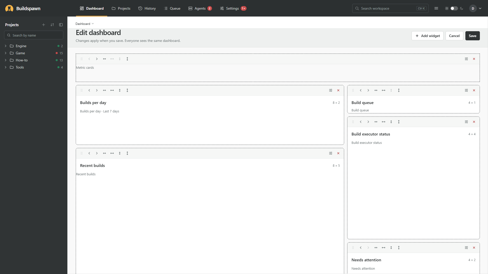

The Dashboard
The Dashboard is the first page many people open. It is a grid of widgets that show what matters most: failing builds, the queue, the agents and the numbers of the last days.

When to use it
Use the Dashboard for a quick look: is the game building? Is the queue growing? Are the agents healthy? For the full list of projects and build configurations, use Projects.
Open it
Click Dashboard in the top bar. Everybody sees the same dashboard. An administrator arranges it, and each widget shows only what the viewer may see. Widgets refresh by themselves. If the server cannot be reached, a widget keeps its last data and says Showing last known data.
The widgets
| Widget | What it shows |
|---|---|
| Metric cards | Four numbers: failing build configurations, running builds, builds waiting in the queue and available executors. Each card links to its list. |
| Builds per day | A bar chart of builds per day, stacked by result, with the success rate, the average duration and the average queue time. The period is the last 24 hours, 7, 14 or 30 days. |
| Recent builds | The latest builds of all build configurations, with result, changes, start time and duration. |
| Build queue | How many builds wait, the oldest wait, why each build waits, and the waits over the last hour. |
| Build executor status | Online, busy and offline agents, and idle executors. It can list the offline agents. |
| Needs attention | Everything that fails, failing first. It can include unstable builds. |
| Watched builds | The build configurations an administrator chose, with their status, recent history and the progress of running builds. |
Arrange the dashboard (administrators)
An administrator clicks Edit dashboard, adds, moves, resizes or removes widgets and clicks Save. An empty dashboard offers Start with suggested widgets. The steps, with every widget option, are on Dashboard in the administration section.
Problems and fixes
| Problem | What to do |
|---|---|
| The Dashboard says Arrange the dashboard and shows no widgets. | Nobody has added widgets yet. Ask an administrator, who can click Start with suggested widgets. |
| A build configuration I watch is missing from a widget. | You may not see it. Widgets hide what you may not see. |
| A widget says Showing last known data. | The server did not answer. Reload the page in a moment. |
Related pages
- Dashboard: set it up.
- The project directory
- History